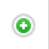

Образцы контроля
Журнал образцов контроля содержит информацию обо всех образцах контроля, созданных в системе ЛИМС U-Lab за все время работы. Из него можно перейти в карточку образца.
Как перейти в журнал
Перейти в журнал условий вы можете по ссылке: Образцы контроля
Функции журнала
- Ведение учета всех созданных образцов контроля в форме таблицы
- Отображение записей в таблице по заданным параметрам (фильтрация)
- Отображение статусов образцов контроля
- Обеспечение доступа к карточке образца контроля
Структура журнала
Интерфейс журнала образцов контроля состоит из следующих элементов:
- Иконка добавления нового образца
- Область фильтров
- Таблица образцов
- Окно выбора количества отображаемых строк в таблице
- Иконки сервисных функций
Добавление образца контроля
Нажмите на даную иконку  чтобы перейти на страницу добавления нового образца контроля.
Область фильтров
Данная область предназначена для задания параметров сортировки информации в таблице журнала. Она содержит следующие элементы:
-
Поле выбора статуса
Установите курсор в данное поле и в выпадающем списке выберите статус, условия в рамках которого вам необходимо отобразить.
-
Поле выбора лаборатории или помещения
Установите курсор в данное поле и в выпадающем списке выберите лабораторию или помещение, условия в рамках которого вам необходимо отобразить.
-
Кнопка сброса фильтров
Нажмите на данную кнопку, чтобы сбросить все примененные фильтры.
Таблица образцов
Данная таблица содержит в себе первичную информацию обо всех образцах контроля, содержащихся в базе данных ЛИМС. В строках таблицы содержится информация о наименовании образца, номерах документов, сроках годности и т.п.
Структура таблицы
Первая строка таблицы представляет собой поля поиска по столбцам (см. соотв. номер ниже).
- Введите в данные поля слово или значение, которое вы хотите найти в строках соответствующего столбца. В результате в таблице отобразятся все строки, содержащие искомую информацию.
- Нажмите на стрелки для сортировки по алфавиту или по возрастанию / убыванию (в зависимости от типа значений в столбце).
Таблица состоит из следующих столбцов:
- Наименование - содержит наименование-ссылку на образец в данной строке. Нажав на него, вы попадете в интерфейс образца.
- Номер - номер образца
- Дата выпуска - дата выпуска образца
- Годен до - до какой даты годен образец контроля
- Метрологические характеристики - компоненты образца контроля
- История - история изменения образца
Окно выбора количества отображаемых строк в таблице
Наведите курсор на окно выбора количества отображаемых строк в таблице. В выпадающем списке выберите нужное количество (10, 25, 50, 100). После этого в таблице отобразится выбранное количество строк.
Иконки сервисных функций
 данная иконка служит для скрытия столбцов в таблице.
При нажатии на нее появится меню выбора столбцов.
Нажмите на кнопку названия, чтобы скрыть соответствующий столбец.
Результат вы увидите сразу, страницу перезагружать не требуется.
данная иконка служит для скрытия столбцов в таблице.
При нажатии на нее появится меню выбора столбцов.
Нажмите на кнопку названия, чтобы скрыть соответствующий столбец.
Результат вы увидите сразу, страницу перезагружать не требуется.
 при нажатии на данную иконку произойдет копирование содержимого таблицы, представленной на экране, в буфер обмена.
Далее вы можете вставить данные таблицы в любой текстовый или табличный документ.
при нажатии на данную иконку произойдет копирование содержимого таблицы, представленной на экране, в буфер обмена.
Далее вы можете вставить данные таблицы в любой текстовый или табличный документ.
 при нажатии на данную иконку произойдет скачивание таблицы, представленной на экране,
на ваш локальный компьютер в формате xlsx.
при нажатии на данную иконку произойдет скачивание таблицы, представленной на экране,
на ваш локальный компьютер в формате xlsx.
 данная иконка служит для вывода на печать представленной на экране таблицы.
При нажатии на нее откроется окно выбора параметров печати и предварительного просмотра.
данная иконка служит для вывода на печать представленной на экране таблицы.
При нажатии на нее откроется окно выбора параметров печати и предварительного просмотра.
Легенда
- Образец контроля не актуален
- Истек срок образца контроля
- До истечения срока образца контроля осталось менее 60 дней
- Все в порядке
- Неизвестный статус